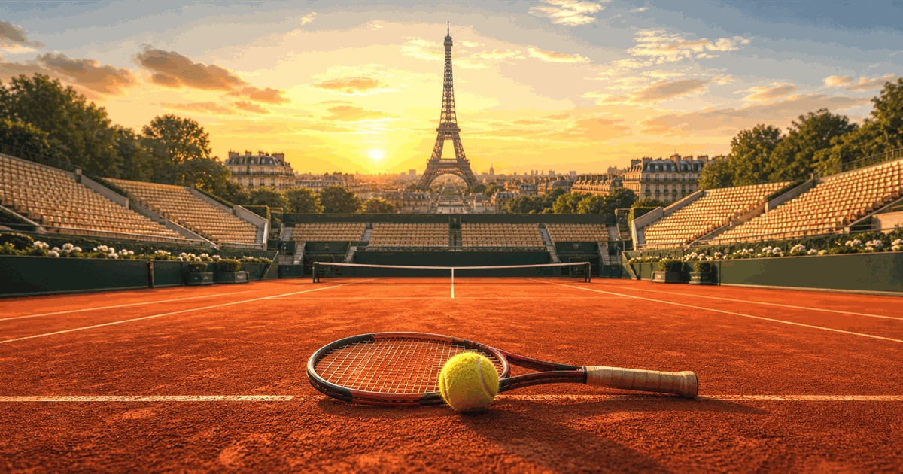

More tennis events, venues and calendar moments.
Parent category and nearby event guides.
Location context and related events.
 More tennisTennis topicMore tennisTennis topic
More tennisTennis topicMore tennisTennis topic